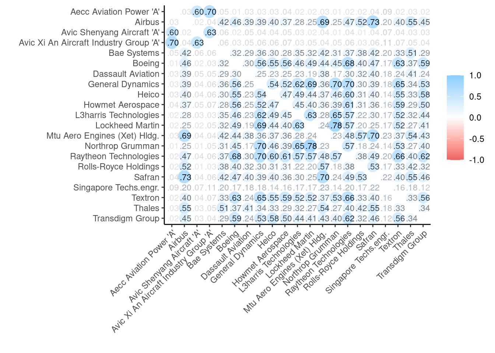

Extreme linkages in the defense and aerospace industry
Abstract
Using quantile-based models, we study the system of return and volatility spillovers among 21 global defense and aerospace companies covering six countries (US, UK, France, Germany, China, Singapore) and three continents (North America, Europe, and Asia) over the period 23 August 2010 – July 1, 2022. The results are summarized as follows. Firstly, both return and volatility spillover measures fluctuate with time, and especially those estimated at the middle quantiles tend to intensity during crisis periods such as the COVID-19 outbreak. Secondly, there is evidence of intensified spillover effects for return shocks at both lower and upper quantiles, exceeding the return spillover estimated at the middle quantile, i.e. around normal market conditions. Thirdly, the level of spillovers at the lower quantile in the return system is considerably larger than that in the volatility system. However, the level of volatility spillover is extremely high at the upper quantile only, and exhibits low variability. Fourthly, Raytheon Technologies plays an important to the system of return spillovers during normal and bull market conditions, whereas Lockheed Martin plays the same role during the bear market condition. For the system of volatility shocks, General Dynamics is a major net transmitter during the middle volatility state, whereas Raytheon Technologies is a major net transmitter during both low and high volatility states. These results have implications for investors concerned with the management of their stock portfolio under various market conditions and policymakers seeking to design policies under normal and volatile market mechanisms.
Keywords: Defense and aerospace companies; Ukrainian war; Russia; quantile vector-autoregression; COVID-19.
Introduction
On 24th February 2022 Russia invaded Ukraine, initiating a war that has led to wide scale devastation, the consequences of which will last far into the future. While the humanitarian effects are almost incomprehensible this event has also substantially impacted financial markets, the global economy, energy prices and the fortunes of defense companies.
Literature
McDonald and Kendall (1994) analyse the effects of war on the U.S. defense industry, focussing on 16 firms that provided military equipment to the Department of Defense. Applying a cumulative prediction error (CPE) technique they find that defense firm stock prices tend to increase as a result of military actions.
Federle et al. (2022) analyse stock market responses to the war in Ukraine, finding that those firms located closer to Ukraine suffered from a ‘proximity penalty’, experiencing more negative equity returns during the four-weeks surrounding the beginning of the war.
Data and methodology
Data
Our dataset comprises the daily closing prices of 21 global defense and aerospace companies belonging to six countries (US, UK, France, Germany, China, Singapore) and three continents (North America, Europe, and Asia). The selected companies are chosen to be large and liquid, with an individual market capitalization exceeding nine billion USD. The list of 21 companies is provided in Appendix Table A.1.
Figure 1 plots the price series levels and highlighting their country of incorporation. The sample period is 23 August 2010 – July 1, 2022, as dictated by the price availability, especially for the Chinese AECC AVIATION POWER ‘A’, which mostly exhibited zero daily fluctuations before 23 August 2010. The price series levels reveal a number of distinct groupings in their movements. Generally, price series levels show common movement with a regime shift towards greater volatility around 2020. Notably, the Chinese stocks experience a shock in 2016 of similar magnitude to that of 2020.
Warning: Removed 6 row(s) containing missing values (geom_path).
Warning: Removed 6 row(s) containing missing values (geom_path).`summarise()` has grouped output by 'Type'. You can override using the `.groups` argument.
`summarise()` has grouped output by 'Type'. You can override using the `.groups` argument.?(caption)
stock | mean_rtn | std_rtn | skewness_rtn | kurtosis_rtn | mean_vol | std_vol | skewness_vol | kurtosis_vol |
Aecc Aviation Power 'A' | 0.0003 | 0.0282 | -0.0301 | 3.3593 | 0.0008 | 0.0018 | 3.8604 | 15.5859 |
Airbus | 0.0006 | 0.0222 | -0.3942 | 14.1441 | 0.0005 | 0.0020 | 17.1781 | 418.1901 |
Avic Shenyang Aircraft 'A' | 0.0007 | 0.0318 | -0.1034 | 2.3129 | 0.0010 | 0.0021 | 3.2236 | 10.4923 |
Avic Xi An Aircraft Industry Group 'A' | 0.0003 | 0.0274 | -0.1179 | 3.2254 | 0.0007 | 0.0017 | 4.0897 | 18.2365 |
Bae Systems | 0.0003 | 0.0145 | 0.0387 | 4.8456 | 0.0002 | 0.0006 | 9.3201 | 126.2856 |
Boeing | 0.0002 | 0.0225 | -0.5922 | 24.0379 | 0.0005 | 0.0026 | 16.2058 | 338.8480 |
Dassault Aviation | 0.0003 | 0.0177 | 0.2823 | 7.5442 | 0.0003 | 0.0010 | 12.7906 | 281.0989 |
General Dynamics | 0.0004 | 0.0138 | -0.4213 | 6.3089 | 0.0002 | 0.0005 | 10.7461 | 177.2481 |
Heico | 0.0009 | 0.0198 | 0.2314 | 8.2309 | 0.0004 | 0.0013 | 11.4078 | 197.2301 |
Howmet Aerospace | 0.0002 | 0.0250 | -0.3132 | 10.8674 | 0.0006 | 0.0022 | 13.6388 | 261.1722 |
L3harris Technologies | 0.0006 | 0.0156 | -0.3262 | 10.4528 | 0.0002 | 0.0009 | 13.5058 | 268.5976 |
Lockheed Martin | 0.0006 | 0.0132 | -0.8031 | 15.5283 | 0.0002 | 0.0007 | 16.4223 | 345.7016 |
Mtu Aero Engines (Xet) Hldg. | 0.0005 | 0.0195 | -0.2408 | 11.8812 | 0.0004 | 0.0014 | 11.7435 | 175.3307 |
Northrop Grumman | 0.0007 | 0.0141 | -0.1802 | 8.0195 | 0.0002 | 0.0006 | 11.5125 | 193.6211 |
Raytheon Technologies | 0.0003 | 0.0157 | -0.3772 | 16.1717 | 0.0002 | 0.0010 | 14.3880 | 266.0843 |
Rolls-Royce Holdings | -0.0002 | 0.0263 | 0.8165 | 22.9719 | 0.0007 | 0.0035 | 21.6540 | 710.5218 |
Safran | 0.0005 | 0.0207 | -0.5998 | 20.5933 | 0.0004 | 0.0020 | 19.2881 | 493.1182 |
Singapore Techs.engr. | 0.0001 | 0.0121 | -0.2709 | 6.6449 | 0.0001 | 0.0004 | 13.5376 | 275.1905 |
Textron | 0.0004 | 0.0215 | -0.3084 | 10.3579 | 0.0005 | 0.0016 | 10.1935 | 138.1299 |
Thales | 0.0005 | 0.0157 | 0.3412 | 7.5005 | 0.0002 | 0.0008 | 11.5736 | 186.6177 |
Transdigm Group | 0.0008 | 0.0204 | -0.8469 | 24.3630 | 0.0004 | 0.0021 | 16.7426 | 372.7349 |
Notes: The sample period is 23 August 2010 – July 1, 2022, yielding 3095 daily return observations. | ||||||||
Based on daily prices, we calculate daily log-returns, and then compute daily volatility as the squared of daily returns. The summary statistics of daily returns and volatility series are presented in ?@tbl-sumstats, respectively. The distributions of the daily returns series are mostly skewed to the left and exhibit fat “tailedness”, with Boeing, Airbus Rolls-Royce, Safran and Transdigm experiencing the highest daily volatility. ?@tbl-Xtremes identifies the 5 highest daily volatilities scores mostly around the end of march 2020 at the height of the uncertainty of the COVID-19 pandemic. ?@fig-vol and Figure 2 provide a time series view of this thickness.
?(caption)
Date | stock | return | volatility | country |
2020-03-18 | Airbus | -0.25 | 0.06 | France |
2020-03-16 | Boeing | -0.27 | 0.07 | US |
2020-11-09 | Rolls-Royce Holdings | 0.36 | 0.13 | UK |
2020-03-18 | Safran | -0.26 | 0.07 | France |
2020-03-18 | Transdigm Group | -0.25 | 0.06 | US |
In the period there are volatility in these 3 stocks seems to be most evident in early 2020. Specifically, Furthermore, initial analysis of autocorrelation with each return and volatility using ADF (Augmented Dickey-Fuller) and PP (Phillips-Perron) stationarity tests are presented in the appendix table A.11. shows no evidence of serial correlation.
Correlation method: 'pearson'
Missing treated using: 'pairwise.complete.obs'Don't know how to automatically pick scale for object of type noquote. Defaulting to continuous.
Don't know how to automatically pick scale for object of type noquote. Defaulting to continuous.
Finally, Figure 4 displays the pearsons pairwise linear correlation coefficients for the daily returns series. Unsurprisingly many of the stock returns series are highly correlated with between Northrop Grumman and Lockheed Martin. Both firms are leading suppliers to the US Defense department, and regularly win joint contracts of work. Figure 4 also reveals that the Chinese stocks are highly correlated with each other but uncorrelated with the firms incorporated in the US and Europe.
Methodology
To study the return and volatility connectedness across 21 global defense and aerospace firms, we use the quantile-VAR-based connectedness approach introduced by [Ando, Greenwood-Nimmo, and Shin (2022)]2. This approach extends the mean-based connectedness framework (Diebold and Yilmaz 2009; Diebold and Yılmaz 2014) and thus allows for capturing extreme connectedness measures estimated at the lower, middle, and upper quantiles. For returns, this allows for capturing the connectedness of return shocks in bear, normal, and bull periods. For volatility, we capture connectedness of volatility shocks in low, middle, and high volatility states.
We consider a portfolio enivroment, where stocks are indexed i=1,2,…,N, and time periods are indexed t=1,2,…,T. Based on a quantile regression (Koenker, 2005), we consider a quantile-VAR process of pth order for a set of N return (volatility) series for time T, \(y_{it}=\{y_{t=1,i=1},\dots,y_{t=T,i=N}\}\) , as given by:
\[ y_{t}=c_{i(\tau)}+\sum_{j=1}^{p} B_{j,(\tau)} y_{t-j}+e_{t(\tau)}, t=1,\dots,T \]
where, \(c_{(\tau)}\) denotes a vector of constant terms at quantile τ, \(B_{j(\tau)}\) represents the matrix of the jth lagged coefficients of the dependent variable at quantile τ, with i =1,…, p, and \(e_{t(\tau)}\) denotes a vector of error terms at quantile τ. Equation (1) is estimated by assuming that the error terms conform to the population quantile restriction, \(Q_t(e_{t(\tau)} |y_{t=1},\dots,y_{t=p})=0\) .
We express the τth conditional quantile of response y as:
\[ Q_t(y_t |y_{t=1},\dots,y_{t=p})=c_{(\tau)}+\hat{B_{i(\tau)}} y_{t-i} \]
Following the approach of Diebold and Yılmaz (2014) , we compute return and volatility connectedness measures based on a quantile variance decomposition.
We represent Equation (3) as an infinite order vector moving average process:
\[ y_t=\mu_{(\tau)}+\sum_{s=0}^{\infty}A_{s(\tau)}e_{t-s(\tau)}, t=1,\dots.T \]
where,
\[ \begin{align*} \mu{(\tau)}= \frac{c_{\tau}}{\left (I_n-B_{1(\tau)}-\dots-B_{p(\tau)} \right)} \\ A_{s(\tau)}= \begin{cases} 0, s<0 \\ I_n, s=0 \\ B_{1(\tau)}A_{s-1(\tau)}+\dots+B_{p(\tau)}A_{s-p(\tau)}, s>0 \end{cases} \\ \text{and $y_t$ is given by the sum of $e_{t(\tau)}$} \end{align*} \]
, and is given by the sum of .
The generalized forecast error variance decomposition (GFEVD),\(\theta^h_{i,j}\), is computed as in Diebold and Yılmaz (2014). The GFEVD reflects the contribution of the ith stock return (volatility) to the variance of the forecast error of the stock return (volatility) ith at h-steps ahead and is defined as:
\[ \theta^{(h)}_{j \leftarrow i,(\tau)}= \frac{\sigma_{ii}^{-1}\sum_{l=0}^{h}(e_j^{'}h_h \Omega_{(\tau)} e_j)^2}{\sum_{h=0}^{H-1}(e_i^{'}h_h \Omega_{(\tau)} e_i)} \]
where, V is the variance matrix of the vector of residuals, \(\sigma_{ii}\) is the jth diagonal element of the V matrix, and \(e_i\)denotes a vector with a value of 1 for the ith element and 0 otherwise.
Its scaled version,\(\theta_{j\leftarrow i,(\tau)}^h\) , is represented as:
\[ \theta_{j\leftarrow i,(\tau)}^h=\frac{\theta^{(h)}_{j \leftarrow i,(\tau)}}{\sum_{j=1}^N \theta^{(h)}_{j \leftarrow i,(\tau)}} \]
The scaled version measures the spillover of the idiosyncratic shock affecting variable i onto variable j (Ando, Greenwood-Nimmo, and Shin 2022).
Various spillover measures are estimated at each quantile and are summaries in Table 2
| Name | Formula | Description |
|---|---|---|
| Own share | \[ \tilde{\theta_{j\leftarrow i,(\tau)}^h} \] | The proportion of the h-steps-ahead GFECD of the ith variable that can be attributed to the shocks to variable i |
| FROM | \[ F_{i \leftarrow \cdot,(\tau)}^h =\sum_{j=1,i \ne j}^m \theta_{j\leftarrow i,(\tau)}^h \] | Measures the total spillover from the system to i, capturing external condition effects on i. |
| TO | \[ T_{\cdot \leftarrow i,(\tau)}^h =\sum_{j=1,i \ne j}^m \theta_{j\leftarrow i,(\tau)}^h \] | Measures the total spillover from i to the system, capturing the influence of ith node in the network. |
| NET | \[ T_{\cdot \leftarrow i,(\tau)}^h -F_{i \leftarrow \cdot,(\tau)}^h \] | Meaures the directional connectedness of variable i. |
| TOTAL | \[ S_{\tau}^h=m^{-1}\sum F_{i \leftarrow \cdot,(\tau)}^h \] | Is the sum of the from system estimates. |
Table 1 describes the modelling output measurements. The third column describes how these can be interpreted in terms of their network dynamics. Note that, by construction, own share and from system sum to one for i=1,2,..,m, buy to system can take values greater than or less than one.
The lag order of the quantile VARs is selected based on SIC. It is equal to 1 for the quantile-VAR of return series and 2 for the quantile-VAR of volatility series. As for the forecast horizon (H), we use 10 days.
Furthermore, we conduct a time-varying spillover analysis (Diebold and Yilmaz (2014) based on a rolling window of 200 days. To assess the robustness of our results, we use a fixed window length of 200 days and a 5-step forecast horizon and show that our spillover results remain almost the same, suggesting their robustness to the window size and forecast horizon. These results are not reported here but are available on request from the authors. (If needed, I can add these results to Appendix).
Results
Measuring the nature and strength of financial market linkages has typically been done using conventional mean estimators. Ando, Greenwood-Nimmo, and Shin (2022) argue, systemic shocks are likely to be much larger than average and need not be the case that large shocks propagate in the same way as smaller shocks thus using regression quantile can answer the key research questions:
Does the topology of the network change with the size of the shocks that affect the system?
In the context of global defense stocks, we are mostly interesting in the nature of network dynamics due to rare conflict events. In terms of financial risk management the propagation of idiosyncratic risk contagion is often defined in relation to the difference in the way that the shock propagate during rate events relative to normal times (Londono 2019). Our analysis thus attempts to nvestigating how much of the future uncertainty associated with stock i can be attribtuted to the idiosyncratic shocks coming from variable j as the shock size varies.
What follows is a comprehensive look at both the return and volatility spillover of our sample of aerospace and defense stocks. The sampling period includes both normal and extreme market conditions, including some conflict periods.
Return and volatility spillovers at the middle and extremes
Returns
Warning in mask$eval_all_mutate(quo): NAs introduced by coerciondocx_extract_all() is deprecated; use docx_extract_all_tbls()Warning: Using size for a discrete variable is not advised.Scale for 'size' is already present. Adding another scale for 'size', which
will replace the existing scale.
Warning in mask$eval_all_mutate(quo): NAs introduced by coerciondocx_extract_all() is deprecated; use docx_extract_all_tbls()Warning: Using size for a discrete variable is not advised.Scale for 'size' is already present. Adding another scale for 'size', which
will replace the existing scale.
Warning in mask$eval_all_mutate(quo): NAs introduced by coerciondocx_extract_all() is deprecated; use docx_extract_all_tbls()Warning: Using size for a discrete variable is not advised.Scale for 'size' is already present. Adding another scale for 'size', which
will replace the existing scale.
Volatility
Warning in mask$eval_all_mutate(quo): NAs introduced by coerciondocx_extract_all() is deprecated; use docx_extract_all_tbls()Warning: Using size for a discrete variable is not advised.Scale for 'size' is already present. Adding another scale for 'size', which
will replace the existing scale.
Warning in mask$eval_all_mutate(quo): NAs introduced by coerciondocx_extract_all() is deprecated; use docx_extract_all_tbls()Warning: Using size for a discrete variable is not advised.Scale for 'size' is already present. Adding another scale for 'size', which
will replace the existing scale.
Warning in mask$eval_all_mutate(quo): NAs introduced by coerciondocx_extract_all() is deprecated; use docx_extract_all_tbls()Warning: Using size for a discrete variable is not advised.Scale for 'size' is already present. Adding another scale for 'size', which
will replace the existing scale.
Time varying spillover results
Conclusion
References
Ando, T., Greenwood-Nimmo, M., & Shin, Y. (2022). Quantile Connectedness: Modeling Tail Behavior in the Topology of Financial Networks. Management Science, 68(4), 2401-2431.
Bouri, E., Lucey B., Saeed, T., & Vo X.V. (2020). Extreme spillovers across Asian-Pacific currencies: A quantile-based analysis. International Review of Financial Analysis, 72, 101605.
Chatziantoniou, I., Gabauer, D., & Stenfors, A. (2021). Interest rate swaps and the transmission mechanism of monetary policy: A quantile connectedness approach. Economics Letters, 204, 109891.
Diebold, F. X., & Yılmaz, K. (2014). On the network topology of variance decompositions: Measuring the connectedness of financial firms. Journal of Econometrics, 182(1), 119-134.
Federle, J., Meier, A., Müller, G.J. and Sehn, V., 2022. Proximity to War: The stock market response to the Russian invasion of Ukraine.
Koenker, R. (2005). Quantile Regression (Econometric Society Monographs). Cambridge University Press. Cambridge, UK. https://doi.org/10.1017/CBO9780511754098.
McDonald, J.E. and Kendall, W.R., (1994). Measuring the economic effects of political events: War and the US defense industry. Journal of Applied Business Research (JABR), 10(1), pp.57-61.
Saeed, T., Bouri, E., & Alsulami, H. (2021). Extreme return connectedness and its determinants between clean/green and dirty energy investments. Energy Economics, 96, 105017.
Appendix
| Jarque-Bera | ADF | PP | |
|---|---|---|---|
| RAYTHEON_TECHNOLOGIES | 32636.5*** | -21.2901*** | -56.4338*** |
| LOCKHEED_MARTIN | 30248.2*** | -56.5766*** | -56.7477*** |
| BOEING | 69973.9*** | -18.1156*** | -52.3339*** |
| AIRBUS | 25224.5*** | -41.3354*** | -53.1875*** |
| NORTHROP_GRUMMAN | 7974.9*** | -57.6092*** | -57.9145*** |
| GENERAL_DYNAMICS | 5069.4*** | -56.0303*** | -56.0601*** |
| L3HARRIS_TECHNOLOGIES | 13927.4*** | -37.8971*** | -58.3311*** |
| SAFRAN | 52968.0 | -27.1859*** | -54.0423*** |
| TRANSDIGM_GROUP | 73823.1 | -27.2219*** | -58.6233*** |
| BAE_SYSTEMS | 2985.9 | -54.9012*** | -54.8972*** |
| THALES | 7219.4 | -52.8929*** | -52.8478*** |
| AECC_AVIATION_POWER__A_ | 1434.8 | -50.3413*** | -50.2565*** |
| HEICO | 8582.7 | -37.9681*** | -57.4079*** |
| AVIC_SHENYANG_AIRCRAFT__A_ | 697.9 | -50.4755*** | -50.432*** |
| TEXTRON | 13536.4 | -56.7672*** | -56.7572*** |
| HOWMET_AEROSPACE | 14968.7 | -55.6534*** | -55.6534*** |
| AVIC_XI_AN_AIRCRAFT_INDUSTRY_GROUP__A_ | 1320.5 | -51.6737*** | -51.6765*** |
| DASSAULT_AVIATION | 7293.6 | -59.0881*** | -59.3442*** |
| MTU_AERO_ENGINES__XET__HLDG_ | 17643.4 | -53.5665*** | -53.5378*** |
| ROLLS_ROYCE_HOLDINGS | 66286.0 | -42.2588*** | -53.3912*** |
| SINGAPORE_TECHS_ENGR_ | 5663.1 | -58.7849*** | -58.7819*** |
Notes: The sample period is 23 August 2010 – July 1, 2022, yielding 3095 daily return observations. ADF (Augmented Dickey-Fuller) and PP (Phillips-Perron) stationarity tests. They are conducted with a constant. The lag length is selected based on SIC. *** indicates statistical significance at the 1% level.
| Jarque-Bera | ADF | PP | |
|---|---|---|---|
| RAYTHEON_TECHNOLOGIES | 9315605 | -8.8644*** | -71.0605*** |
| LOCKHEED_MARTIN | 15682053 | -10.8166*** | -57.4850*** |
| BOEING | 14697726 | -9.4739*** | -59.9743*** |
| AIRBUS | 23033869 | -11.5572*** | -65.0529*** |
| NORTHROP_GRUMMAN | 4856762 | -10.5620*** | -55.0415*** |
| GENERAL_DYNAMICS | 4133764 | -9.4617*** | -64.1503*** |
| L3HARRIS_TECHNOLOGIES | 9512974 | -11.8003*** | -53.9115*** |
| SAFRAN | 31946613 | -11.6048*** | -62.0761*** |
| TRANSDIGM_GROUP | 18184391 | -8.6389*** | -55.6789*** |
| BAE_SYSTEMS | 2117775 | -16.0119*** | -50.1728*** |
| THALES | 4625049 | -16.3795*** | -60.5916*** |
| AECC_AVIATION_POWER__A_ | 38428 | -9.8441*** | -62.2551*** |
| HEICO | 5142764 | -9.5040*** | -65.6277*** |
| AVIC_SHENYANG_AIRCRAFT__A_ | 19848 | -10.2645*** | -62.4013*** |
| TEXTRON | 2525317 | -10.6989*** | -55.9341*** |
| HOWMET_AEROSPACE | 8990159 | -15.2603*** | -62.3260*** |
| AVIC_XI_AN_AIRCRAFT_INDUSTRY_GROUP__A_ | 51874 | -10.7828*** | -60.2592*** |
| DASSAULT_AVIATION | 10416628 | -12.8417*** | -55.6529*** |
| MTU_AERO_ENGINES__XET__HLDG_ | 4074035 | -9.3358*** | -66.7664*** |
| ROLLS_ROYCE_HOLDINGS | 66237434 | -5.3944*** | -63.2794*** |
| SINGAPORE_TECHS_ENGR_ | 9984241 | -12.0964*** | -67.2677*** |
Notes: The sample period is 23 August 2010 – July 1, 2022, yielding 3095 daily volatility observations. Volatility is computed as squared returns. ADF (Augmented Dickey-Fuller) and PP (Phillips-Perron) stationarity tests. They are conducted with a constant. The lag length is selected based on SIC. *** indicates statistical significance at the 1% level.
The sample period is 23 August 2010 – July 1, 2022.
##Table 2. Correlation matrix of daily volatility**
The sample period is 23 August 2010 – July 1, 2022.
Table 3. Return spillovers estimated at the middle quantile (τ = 0.50)
Table 4. Return spillovers estimated at the upper quantile (τ = 0.95)
Table 5. Return spillovers estimated at the lower quantile (τ = 0.05)
Table 3. Volatility spillovers estimated at the middle quantile (τ = 0.50)
Table 7. Volatility spillovers estimated at the upper quantile (τ = 0.95)
Table 8. Volatility spillovers estimated at the lower quantile (τ = 0.05)
##Figure 1. Total connectedness index for returns - estimated at the middle quantile (τ= 0.5)**
Figure 2. Total connectedness index for returns - estimated at the upper quantile (τ= 0.95)
Figure 3. Total connectedness index for returns - estimated at the lower quantile (τ= 0.05)
Figure . TO spillovers index for returns - estimated at the middle quantile (τ= 0.5)
Figure . FROM spillovers index for returns - estimated at the middle quantile (τ= 0.5)
Figure . NET spillovers index for returns - estimated at the middle quantile (τ= 0.5)
Figure . TO spillovers index for returns - estimated at the upper quantile (τ= 0.95)**
Figure . FROM spillovers index for returns - estimated at the upper quantile (τ= 0.95)
Figure . NET spillovers index for returns - estimated at the upper quantile (τ= 0.95)
Figure . TO spillovers index for returns - estimated at the lower quantile (τ= 0.05)
Figure . FROM spillovers index for returns - estimated at the upper quantile (τ= 0.05)
Figure . NET spillovers index for returns - estimated at the upper quantile (τ= 0.05)
Figure . Total connectedness index for volatility - estimated at the middle quantile (τ= 0.5)
Figure . Total connectedness index for volatility - estimated at the upper quantile (τ= 0.95)
Figure . Total connectedness index for volatility - estimated at the lower quantile (τ= 0.05)
Figure . TO spillovers index for volatility - estimated at the middle quantile (τ= 0.5)
Figure . FROM spillovers index for volatility - estimated at the middle quantile (τ= 0.5)
Figure . NET spillovers index for volatility - estimated at the middle quantile (τ= 0.5)**
Figure . TO spillovers index for volatility - estimated at the upper quantile (τ= 0.95)**
Figure . FROM spillovers index for volatility - estimated at the upper quantile (τ= 0.95)**
Figure . NET spillovers index for volatility - estimated at the upper quantile (τ= 0.95)**
Figure . TO spillovers index for volatility - estimated at the lower quantile (τ= 0.05)
Figure . FROM spillovers index for volatility - estimated at the lower quantile (τ= 0.05)**
Figure . NET spillovers index for volatility - estimated at the lower quantile (τ= 0.05)
Appendix A
Table A.1. List of global defense and aerospace companies
| Identifier RIC | Company Name | Market Cap (USD) | Country |
|---|---|---|---|
| RTX.N | Raytheon Technologies Corp | 146,531,979,614 | US |
| LMT.N | Lockheed Martin Corp | 126,945,196,089 | US |
| BA.N | Boeing Co | 98,626,070,245 | US |
| AIR.PA | Airbus SE | 80,725,491,421 | France |
| NOC.N | Northrop Grumman Corp | 74,608,919,355 | US |
| GD.N | General Dynamics Corp | 68,671,930,259 | US |
| LHX.N | L3harris Technologies Inc | 52,270,661,495 | US |
| SAF.PA | Safran SA | 44,491,097,467 | France |
| TDG.N | TransDigm Group Inc | 32,831,888,090 | US |
| BAES.L | BAE Systems PLC | 30,800,737,305 | UK |
| TCFP.PA | Thales SA | 26,768,225,374 | France |
| 600893.SS | AECC Aviation Power Co Ltd | 18,774,820,321 | China |
| HEI.N | HEICO Corp | 18,046,618,051 | US |
| 600760.SS | Avic Shenyang Aircraft Co Ltd | 15,837,867,867 | China |
| TXT.N | Textron Inc | 14,706,071,116 | US |
| HWM.N | Howmet Aerospace Inc | 13,580,896,080 | US |
| 000768.SZ | Avic XiAn Aircraft Industry Group Co Ltd | 13,213,649,293 | China |
| AM.PA | Dassault Aviation SA | 11,958,644,778 | France |
| MTXGn.DE | MTU Aero Engines AG | 11,075,850,164 | Germany |
| RR.L | Rolls-Royce Holdings PLC | 9,761,495,628 | UK |
| STEG.SI | Singapore Technologies Engineering Ltd | 9,243,974,029 | Singapore |
Figure A.1. Daily prices of the 21 global defense and aerospace companies**
References
Ando, Tomohiro, Matthew Greenwood-Nimmo, and Yongcheol Shin. 2022. “Quantile Connectedness: Modeling Tail Behavior in the Topology of Financial Networks.” Management Science 68 (4): 2401–31. https://doi.org/10.1287/mnsc.2021.3984.
Diebold, Francis X., and Kamil Yilmaz. 2009. “Measuring Financial Asset Return and Volatility Spillovers, with Application to Global Equity Markets*.” The Economic Journal 119 (534): 158–71. https://doi.org/10.1111/j.1468-0297.2008.02208.x.
Diebold, Francis X., and Kamil Yılmaz. 2014. “On the network topology of variance decompositions: Measuring the connectedness of financial firms.” Journal of Econometrics 182 (1): 119–34. https://doi.org/10.1016/j.jeconom.2014.04.012.
Londono, Juan M. 2019. “Bad bad contagion.” Journal of Banking & Finance 108: 105652. https://doi.org/10.1016/j.jbankfin.2019.105652.